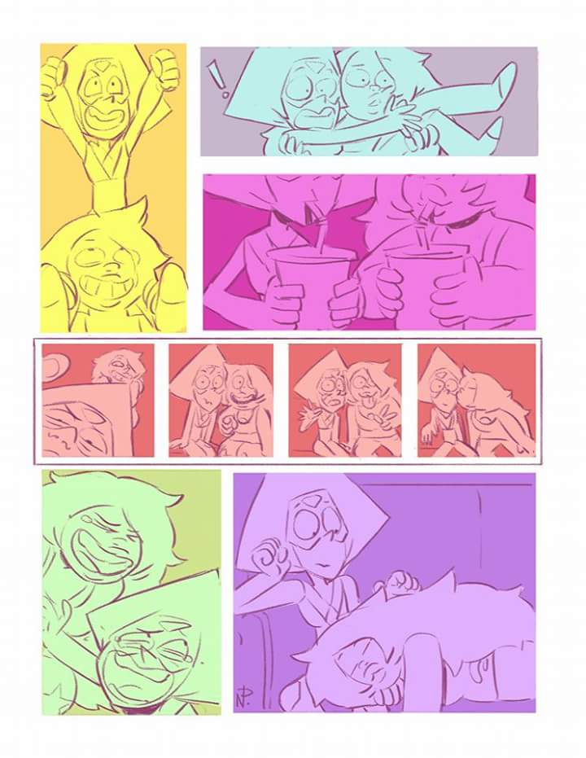
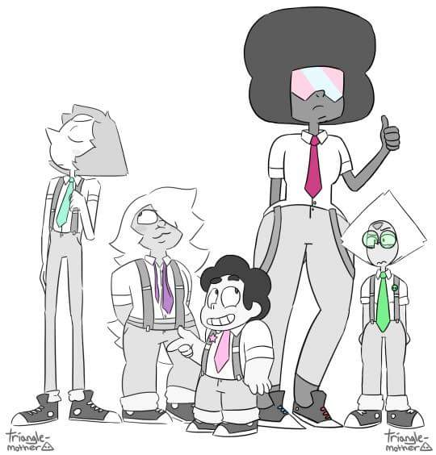

Acerca de mi:
Objetivo General:
Crecer como una persona profesional alcanzando mis metas paso a paso, siempre con deseos de seguir aprendiendo y expandir mis conocimientos,
manteniendo buenas relaciones interpersonales con mi fammilia, mis amigos y compañeros. Mi promesa con migo mismo siempre sera nunca olvidar
quien soy, de donde vengo y a hacia donde voy.
Objetivos Especificos:
- Completar mis estudios universitarios actuales, al ser uno de mis objetivos principales
y uno de los mas importantes en mi vida, el estudio continuo y el mejoramiento constante
siempre esta presente.
- Continuar mis estudios universitarios, la informatica siempre ha sido una mis pasiones
pero tambien me apasionan muchas otras areas de estudio como lo son la electricidad, la quimica y
las artes culinarias.
- Casarme con la persona que mas amo, mi novia siempre ha sido una inspiracion para mi y siempre ha estado para mi
en las buenas y las malas por eso mi meta es un dia poder casarme con ella.
- Trabajar en algo que me apasione, un buen trabajo en el cual me sienta parte de el y lo que hago
que me ayude a crecer y a alcanzar mis metas complementando mis estudios.
- Mantener las relaciones con la familia, mi familia siempre me ha apoyado y son muy importantes para mi
nuestro lazo familiar es demasiado valioso y espero mantenerlo asi a traves de los años.
 